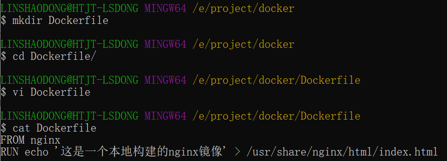

Docker Dockerfile
Dockerfileとは？
Dockerfileは、Dockerイメージを構築するためのすべての命令を含むテキストファイルです。
Dockerfileはイメージを構築するためのテキストファイルで、テキストの内容にはイメージの構築に必要な命令と説明が1つずつ含まれています。
一連のコマンドとパラメータを定義することで、DockerfileはDockerにカスタムイメージの構築を指示します。
Dockerfileを使ってイメージをカスタマイズする
ここでは、Dockerfileファイルを実行してイメージをカスタマイズする方法のみを説明します。具体的なDockerfileファイル内の命令の詳細は次のセクションで紹介します。ここでは構築の流れだけを理解しておけばOKです。
1、次にnginxイメージをカスタマイズする例を示します（構築されたイメージ内には /usr/share/nginx/html/index.html ファイルがあります）
空のディレクトリに、Dockerfileという名前のファイルを新規作成し、ファイル内に次の内容を追加します：
FROM nginx RUN echo '这是一个本地构建的nginx镜像' > /usr/share/nginx/html/index.html

2、FROM と RUN 命令の役割
FROMFROM：カスタマイズするイメージはすべてFROMのイメージに基づきます。ここでのnginxはカスタマイズに必要なベースイメージです。後続の操作はすべてnginxに基づきます。
RUNRUN：後ろに続くコマンドラインコマンドを実行するために使用します。次の2つの形式があります。
shell 形式：
RUN <命令行命令> # <命令行命令> 等同于，在终端操作的 shell 命令。
exec 形式：
RUN ["可执行文件", "参数1", "参数2"] # 例如： # RUN ["./test.php", "dev", "offline"] 等价于 RUN ./test.php dev offline
注意注意：Dockerfileの命令は実行されるたびにdocker上に新しいレイヤーを作成します。そのため、意味のないレイヤーが多すぎると、イメージが過度に肥大化します。例：
RUN yum -y install wget
RUN wget -O redis.tar.gz "http://download.redis.io/releases/redis-5.0.3.tar.gz"
RUN tar -xvf redis.tar.gz
上記の実行では3層のイメージが作成されます。次の形式に簡略化できます：
RUN yum -y install wget \
&& wget -O redis.tar.gz "http://download.redis.io/releases/redis-5.0.3.tar.gz" \
&& tar -xvf redis.tar.gz
上記のように、&&記号でコマンドを接続すると、このように実行した後、作成されるイメージは1層だけです。
イメージの構築を開始する
Dockerfileファイルが置かれているディレクトリで、構築アクションを実行します。
次の例では、ディレクトリ内のDockerfileを使用して nginx:v3（イメージ名:イメージタグ）を構築します。
注：最後の.は、今回実行するコンテキストパスを表します。次のセクションで紹介します。

上記の表示により、構築が成功したことがわかります。
コンテキストパス
前のセクションで、命令の最後の.はコンテキストパスであると述べました。では、コンテキストパスとは何でしょうか？
コンテキストパスとは、dockerがイメージを構築する際に、ローカルマシンのファイル（コピーなど）を使用したい場合があることを指します。docker buildコマンドはこのパスを認識すると、パス配下のすべての内容をパッケージ化します。
解説解説：dockerの実行モードはC/Sです。ローカルマシンはC、dockerエンジンはSです。実際の構築プロセスはdockerエンジン内で完了するため、このときローカルマシンのファイルを使用することはできません。そのため、ローカルマシンの指定ディレクトリ内のファイルをまとめてパッケージ化し、dockerエンジンに提供する必要があります。
最後のパラメータが指定されていない場合、デフォルトのコンテキストパスはDockerfileがある場所になります。
注意注意：コンテキストパス配下に不要なファイルを置かないでください。一緒にパッケージ化されてdockerエンジンに送信されるため、ファイルが多すぎると処理が遅くなる可能性があります。
命令の詳細
| Dockerfile命令 | 説明 |
|---|---|
| FROM | ベースイメージを指定し、後続の命令の構築に使用します。 |
| MAINTAINER | Dockerfileの作者/メンテナを指定します。（非推奨。LABEL命令の使用を推奨します） |
| LABEL | イメージのメタデータをキーと値のペアの形式で追加します。 |
| RUN | 構築プロセス中にイメージ内でコマンドを実行します。 |
| CMD | コンテナ作成時のデフォルトコマンドを指定します。（上書き可能） |
| ENTRYPOINT | コンテナ作成時の主要コマンドを設定します。（上書き不可） |
| EXPOSE | コンテナ実行時にリッスンする特定のネットワークポートを宣言します。 |
| ENV | コンテナ内に環境変数を設定します。 |
| ADD | ファイル、ディレクトリ、またはリモートURLをイメージにコピーします。 |
| COPY | ファイルまたはディレクトリをイメージにコピーします。 |
| VOLUME | コンテナにマウントポイントを作成するか、ボリュームを宣言します。 |
| WORKDIR | 後続の命令の作業ディレクトリを設定します。 |
| USER | 後続の命令のユーザーコンテキストを指定します。 |
| ARG | 構築プロセス中にビルダーに渡す変数を定義します。"docker build"コマンドで設定できます。 |
| ONBUILD | そのイメージが別の構築プロセスのベースとして使用される場合に、トリガーを追加します。 |
| STOPSIGNAL | コンテナに送信して終了させるシステムコールシグナルを設定します。 |
| HEALTHCHECK | コンテナのヘルス状態を定期的にチェックするコマンドを定義します。 |
| SHELL | Dockerのデフォルトシェルを上書きし、RUN、CMD、ENTRYPOINT命令に使用します。 |
COPY
コピー命令で、コンテキストディレクトリからファイルまたはディレクトリをコンテナ内の指定パスにコピーします。
形式：
COPY [--chown=<user>:<group>] <源路径1>... <目标路径> COPY [--chown=<user>:<group>] ["<源路径1>",... "<目标路径>"]
[--chown=<user>:<group>]：オプションのパラメータで、コンテナ内にコピーされたファイルの所有者とグループを変更します。
<ソースパス>：ソースファイルまたはソースディレクトリです。ここではワイルドカード式を使用でき、そのワイルドカード規則はGoのfilepath.Match規則を満たす必要があります。例：
COPY hom* /mydir/ COPY hom?.txt /mydir/
<ターゲットパス>：コンテナ内の指定パスです。このパスは事前に作成する必要はなく、パスが存在しない場合は自動的に作成されます。
ADD
ADD命令とCOPYの使用形式は似ています（同じ要件の場合、公式はCOPYの使用を推奨しています）。機能も似ていますが、相違点は次のとおりです：
- ADDの利点：<ソースファイル>がtar圧縮ファイルの場合、圧縮形式がgzip、bzip2、xzであれば、自動的にコピーして<ターゲットパス>に解凍します。
- ADDの欠点：解凍しない場合、tar圧縮ファイルをコピーできません。イメージ構築キャッシュを無効にし、イメージ構築が比較的遅くなる可能性があります。使用するかどうかは、自動解凍が必要かどうかに基づいて決定できます。
CMD
RUN命令に似ており、プログラムの実行に使用されますが、両者の実行時点は異なります：
- CMDはdocker run時に実行されます。
- RUNはdocker build時に実行されます。
役割：起動したコンテナにデフォルトで実行するプログラムを指定します。プログラムの実行が終了すると、コンテナも終了します。CMD命令で指定されたプログラムは、docker runコマンドライン引数で指定された実行プログラムによって上書きできます。
注意：Dockerfile内に複数のCMD命令が存在する場合、最後の1つだけが有効になります。
形式：
CMD <shell 命令> CMD ["<可执行文件或命令>","<param1>","<param2>",...] CMD ["<param1>","<param2>",...] # 该写法是为 ENTRYPOINT 指令指定的程序提供默认参数
2番目の形式の使用を推奨します。実行プロセスが明確です。1番目の形式は、実際には実行中に自動的に2番目の形式に変換されて実行され、デフォルトの実行可能ファイルはshです。
ENTRYPOINT
CMD命令に似ていますが、docker runのコマンドライン引数で指定された命令によって上書きされず、これらのコマンドライン引数はENTRYPOINT命令で指定されたプログラムにパラメータとして渡されます。
ただし、docker run実行時に--entrypointオプションを使用した場合、ENTRYPOINT命令で指定されたプログラムが上書きされます。
利点：docker runを実行するときに、ENTRYPOINTの実行に必要なパラメータを指定できます。
注意：Dockerfile内に複数のENTRYPOINT命令が存在する場合、最後の1つだけが有効になります。
形式：
ENTRYPOINT ["<executeable>","<param1>","<param2>",...]
CMD命令と組み合わせて使用できます：通常、可変引数の場合にCMDを使用します。ここでのCMDはENTRYPOINTにパラメータを渡すようなもので、以下の例で説明します。
例：
Dockerfileを介してnginx:testイメージを構築済みだと仮定します：
FROM nginx ENTRYPOINT ["nginx", "-c"] # 定参 CMD ["/etc/nginx/nginx.conf"] # 变参
1、パラメータを渡さずに実行
$ docker run nginx:test
コンテナ内ではデフォルトで次のコマンドが実行され、メインプロセスが起動します。
nginx -c /etc/nginx/nginx.conf
2、パラメータを渡して実行
$ docker run nginx:test -c /etc/nginx/new.conf
コンテナ内ではデフォルトで次のコマンドが実行され、メインプロセスが起動します(/etc/nginx/new.conf: コンテナ内にこのファイルが既に存在すると仮定)
nginx -c /etc/nginx/new.conf
ENV
環境変数を設定します。環境変数を定義すると、後続の命令でこの環境変数を使用できます。
形式：
ENV <key> <value> ENV <key1>=<value1> <key2>=<value2>...
次の例ではNODE_VERSION = 7.2.0を設定し、後続の命令で$NODE_VERSIONを介して参照できます：
ENV NODE_VERSION 7.2.0 RUN curl -SLO "https://nodejs.org/dist/v$NODE_VERSION/node-v$NODE_VERSION-linux-x64.tar.xz" \ && curl -SLO "https://nodejs.org/dist/v$NODE_VERSION/SHASUMS256.txt.asc"
ARG
構築パラメータで、ENVと同じ役割を持ちます。ただし、スコープが異なります。ARGで設定された環境変数はDockerfile内でのみ有効です。つまり、docker buildの過程でのみ有効であり、構築されたイメージ内にはこの環境変数は存在しません。
構築コマンドdocker buildでは、--build-arg <パラメータ名>=<値> を使用して上書きできます。
形式：
ARG <参数名>[=<默认值>]
VOLUME
匿名データボリュームを定義します。コンテナ起動時にデータボリュームのマウントを忘れた場合、自動的に匿名ボリュームにマウントされます。
役割：
- 重要なデータがコンテナの再起動によって失われるのを防ぎます。これは非常に致命的です。
- コンテナがどんどん大きくなるのを防ぎます。
形式：
VOLUME ["<路径1>", "<路径2>"...] VOLUME <路径>
コンテナを起動する docker run の際、-v パラメータでマウントポイントを変更できます。
EXPOSE
単にポートを宣言するだけです。
役割：
- イメージ利用者がこのイメージサービスの待受ポートを理解し、マッピングを設定しやすくするのに役立ちます。
- 実行時にランダムなポートマッピングを使用する場合、つまり docker run -P の場合、EXPOSE されたポートが自動的にランダムにマッピングされます。
形式：
EXPOSE <端口1> [<端口2>...]
WORKDIR
作業ディレクトリを指定します。WORKDIR で指定した作業ディレクトリは、イメージを構築する各層に存在します。以降の各層のカレントディレクトリは指定したディレクトリに変更されます。そのディレクトリが存在しない場合、WORKDIR がディレクトリを作成します。
docker build でイメージを構築する過程では、各 RUN コマンドが新しい層を作成します。WORKDIR で作成されたディレクトリだけが常に存在し続けます。
形式：
WORKDIR <工作目录路径>
USER
後続のコマンドを実行するユーザーとユーザーグループを指定するために使用します。ここでは後続のコマンドを実行するユーザーを切り替えるだけです（ユーザーとユーザーグループはあらかじめ存在している必要があります）。
形式：
USER <用户名>[:<用户组>]
HEALTHCHECK
特定のプログラムまたは命令を指定して、docker コンテナサービスの実行状態を監視するために使用します。
形式：
HEALTHCHECK [选项] CMD <命令>：设置检查容器健康状况的命令 HEALTHCHECK NONE：如果基础镜像有健康检查指令，使用这行可以屏蔽掉其健康检查指令 HEALTHCHECK [选项] CMD <命令> : 这边 CMD 后面跟随的命令使用，可以参考 CMD 的用法。
ONBUILD
ビルドコマンドの実行を遅延させるために使用します。簡単に言うと、Dockerfile 内で ONBUILD に指定したコマンドは、今回のイメージ構築プロセスでは実行されません（イメージを test-build とします）。新しい Dockerfile が以前に構築したイメージ FROM test-build を使用する場合、新しいイメージの Dockerfile を構築するときに、test-build の Dockerfile 内で ONBUILD に指定されたコマンドが実行されます。
形式：
ONBUILD <其它指令>
LABEL
LABEL 命令は、イメージにメタデータを追加するために使用します。キーと値のペアの形式で、構文は次のとおりです。
LABEL <key>=<value> <key>=<value> <key>=<value> ...
たとえば、イメージの作者を追加できます：
LABEL org.opencontainers.image.authors="runoob"その他の拡張